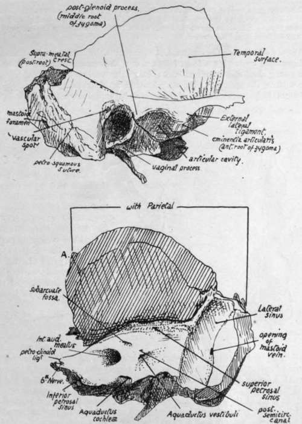
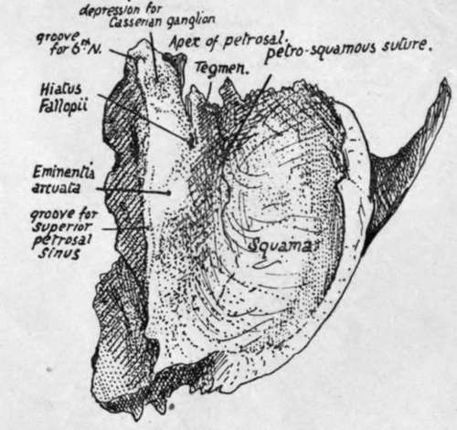

Temporal. Part 3
Description
This section is from the book "The Anatomy Of The Human Skeleton", by J. Ernest Frazer. Also available from Amazon: The anatomy of the human skeleton.
Temporal. Part 3
for the ex.it of the facial nerve and entrance of stylo-mastoid artery (from posterior auricular). This foramen is just behind the styloid process.
The seventh is the nerve of the second arch, of which the styloid is the bar : the typical arrangement is that the nerves run into their arches behind the bars and then turn forward round them to reach the front of the arches, and the facial nerve shows this relation, issuing behind the styloid and then turning forward over it.
Fig. 175.-Outer and inner aspects of temporal bone. Right side. A. in lower figure marks junction of parietal and sphenoidal articular surfaces on margin.
The inner or posterior surface of the petrous looks backwards and inwards into the posterior fossa and is nearly vertical in plane. It presents : a large and deep internal auditory meatus for the entrance of the_seventh and eighth nerves, pars intermedia, and auditory branch of basilar artery : about half an inch behind this the aquaductus vestibuli, a narrow slit containing the blind terminal part of the ductus endolymphaticus.
This is the remains of the stalk of the otocyst, which (Fig. 174) is drawn out as a result of the descent of the otic vesicle : the growth of the vesicle to form the inner ear, and of the surrounding petrous to enclose it, leads to the undeveloped " duct " being embedded in the inner aspect of the bone, and between it and the dura mater.
Above and between the meatus and aqueduct is the subarcuate fossa, another slitlike depression, containing a fold of dura mater, the remains of a larger fossa present in the young skull and described later : below the meatus, close to the lower border of the surface, the opening of the aquaductus cochlea, immediately above the fossette that lodges the petrous ganglion of the glosso-pharyngeal nerve (Fig. 175).
This foramen transmits a minute vein to the inferior petrosal sinus, also the " ductus cochleae " from the scala tympani of the bony labyrinth to the subarachnoid space ; the dura mater turns into the foramen to make a tunnel for the passage of the ductus.
Along the lower border of the inner surface, in front of the aquaeductus cochleae, there runs a half-groove for the inferior petrosal sinus (see Fig. 175). The groove for the lateral sinus turns down behind the projecting part of the bone, on the mastoid portion, and this part of the bone is curved inwards as it helps to form the outer part of the back wall of the posterior fossa of the skull.
The whole of the lower margin of the inner surface articulates with the occipital, except where the jugular foramen occurs, but a thin layer of cartilage is between them from the front end to the lateral sinus.
The upper surface (Fig. 176) of the petrous looks also outwards and forwards. It presents : a hollow near the apex, for the Gasserian or semilunar ganglion and trunk of the fifth nerve : the eminentia arcuala marking the position of the superior semicircular canal: in front of this, and rather outside it, the hiatus Fallopii, a foramen for the exit of the great superficial petrosal nerve and entrance of the petrous branch of the middle meningeal artery, and a groove leading downwards, inwards, and forwards from the hiatus to the foramen lacerum for the reception of the nerve : outside the hiatus another smaller opening and groove for the exit of the small superficial petrosal nerve : another groove may usually be seen running from this opening to the neighbouring border, for the nerve. Outside these openings, between them and the petrosquamous suture, the surface is made by the Tegmen tympani, as a short examination of the bone will show.
Fig. 176.-View of right temporal bone from above.
In addition to the above, the upper surface has ill-defined markings, due to the pressure of the lower convolutions of the temporo-sphenoidal lobe of the brain.
The upper and inner surfaces are separated by the upper margin to which the Tentorium cerebelli is attached : the superior petrosal sinus runs in a groove along it between the layers of the tentorium, the groove extending from the lateral sinus behind to the depression for the ganglion in front. The sinus runs forward above the level of the fifth nerve, which is below the tentorium, so it does not touch the petrous bone at or in front of the depression for the nerve.
The apex of the petrous is rough with bony projections : it forms the posterior boundary of the foramen lacerum, and the size of the foramen depends on the extent to which the ossification of the petrous has extended forward. A ligamentous band, petro-clinoid, passes from the topmost point of the apex to the posterior clinoid process, and the sixth nerve passes under the outer part of this ligament; ossification may extend into the ligament, which then forms a little point of bone on the apex (Fig. 176), overhanging a groove in which the nerve rests.
The outer border of the upper surface corresponds with the superior petro-squamous suture.
Dura mater is applied to the upper and inner surfaces of the petrous. Between it and the bone of the upper surface lie the ganglion (in its cavum of dura mater) and the superficial petrosal nerves. On the inner aspect the dura mater is turned into the internal meatus with the nerves, which pierce it in the meatus, and also into the aquaeductus cochleae, where the ductus cochleae passes through it. It has the ductus endolymphaticus between it and the bone, also the petrosal and lateral sinuses and the small vein issuing from the cochlear foramen: it turns into the front part of the jugular foramen to form sheaths for the nerves passing through this opening.
The styloid process projects downwards, inwards and forwards from the lower aspect of the bone, emerging between the tympanic plate and the petrous, so that the jugular foramen is just internal to it and the stylo-mastoid foramen immediately behind it. It varies in length and has the stylo-hyoid ligament continuous with its extremity. Its base is fused with the petrous bone in the back wall of the tympanum.
Continue to: